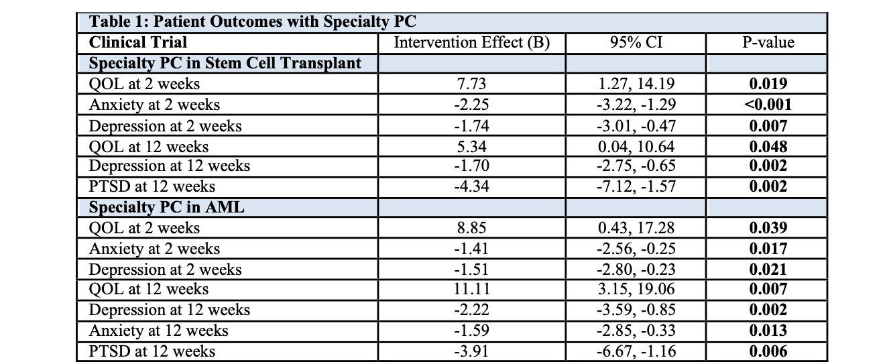

10 Preliminary Data
10.1 Preliminary Data
List of all outcome/endpoint variables, with a description of their coding/units, timing, and source, corresponding to the statistical hypotheses. If any variables are defined using ICD or CPT codes, list them out.
10.1.1 Burden of AML
We demonstrated that patients with AML have a marked decline in their quality of life (QOL) during chemotherapy [B = -9.5, P < 0.001] and that the proportion with clinically significant depression increases during the first month after treatment (34% to 46%, P = 0.01)(A. El-Jawahri et al. 2019). Caregivers similarly experience a deterioration in their QOL and the proportion with clinically significant depression almost doubles in the first month after treatment (17% to 31%, P = 0.03)(A. El-Jawahri et al. 2019). We have also shown that patients with AML spend two-thirds of their life from diagnosis to death in the hospital or clinic, and in the last month of life almost 90% are hospitalized, half receive chemotherapy, and one-third are admitted to the ICU (A. R. El-Jawahri et al. 2015).
10.1.2 Specialty PC
The MGH research team has conducted six multi-site specialty PC trials in patients with cancer. In their landmark New England Journal of Medicine study, they showed that patients with advanced lung cancer assigned to specialty PC from the time of diagnosis had better QOL, less depression, higher rates of documented end-of-life (EOL) care preferences, lower rates of chemotherapy administration in the last month of life, and increased hospice utilization compared to patients receiving usual care (J. S. Temel et al. 2010). These findings were confirmed in a subsequent large-scale trial in patients with advanced lung and gastrointestinal cancers (Jerome S. Temel et al. 2016). Based on this work, specialty PC has become standard of care for patients with advanced solid tumors (Ferrell et al. 2016).
Recognizing that specialty PC was rarely involved in the care of patients with hematologic malignancies, we studied the first specialty PC intervention for patients with hematologic malignancies undergoing stem cell transplantation. This trial demonstrated that specialty PC improved key patient outcomes—including QOL, depression, and anxiety (tab-outcomes?; Areej R. El-Jawahri et al. 2016, 2017)—and caregiver depression and coping (Areej R. El-Jawahri et al. 2016, 2017). These benefits were sustained at 12- and 24-weeks post-transplant with improvements in patient depression and post-traumatic stress symptoms (Areej R. El-Jawahri et al. 2016, 2017). Building on this work, we recently completed a multi-site randomized trial evaluating the efficacy of specialty PC for patients with AML. This study demonstrated early and sustained improvement in patients’ QOL, depression, anxiety, and post-traumatic stress symptoms (tab-outcomes?; Areej El-Jawahri et al. 2021). Patients receiving specialty PC were also significantly more likely to discuss their EOL care preferences with their clinicians and less likely to receive chemotherapy in the last 30 days of life (Areej El-Jawahri et al. 2021). Thus, the MGH team has substantial experience conducting large-scale PC trials in oncology that will ensure the success of this project.
10.1.3 Primary PC
Our investigative team also has experience training clinicians to deliver primary PC. Dr. Yael Schenker conducted a single-arm pilot trial assessing the feasibility, acceptability, and perceived effectiveness of primary PC for patients with advanced cancer (Schenker et al. 2015). The primary PC intervention entailed training oncology clinicians to address symptoms, engage patients and caregivers in EOL discussions, provide emotional support, and coordinate care, especially at the EOL. All eligible oncology clinicians attended the training and felt it improved the quality of care they provided for patients with advanced cancer. Patients and caregivers reported high satisfaction with primary PC and perceived it as helpful in addressing symptoms, coping, and planning for the future (Schenker et al. 2015). Additionally, Dr. Vicki Jackson has expertise conducting primary PC training for clinicians in oncology and other medical specialties through her leadership of the Harvard Palliative Care Education and Practice course. More than 1200 clinicians have attended this course on the management of physical and psychological symptoms, coping, illness understanding, and EOL communication. Thus, our research team has the necessary expertise to train oncology clinicians successfully to deliver PC and evaluate the effectiveness of primary PC for patients with cancer.
10.1.4 Table Patient Outcomes with Specialty PC
Code
knitr::include_graphics("figures/F22_table1_outcomes.png",
dpi = 30,)
Click to expand Table 1
Table 1: Patient Outcomes with Specialty PC
| Clinical Trial | Intervention Effect (B) | 95% CI | P-value |
|---|---|---|---|
| Specialty PC in Stem Cell Transplant | |||
| QOL at 2 weeks | 7.73 | 1.27, 14.19 | 0.019 |
| Anxiety at 2 weeks | -2.25 | -3.22, -1.29 | <0.001 |
| Depression at 2 weeks | -1.74 | -3.01, -0.47 | 0.007 |
| QOL at 12 weeks | 5.34 | 0.04, 10.64 | 0.048 |
| Depression at 12 weeks | -1.70 | -2.75, -0.65 | 0.002 |
| PTSD at 12 weeks | -4.34 | -7.12, -1.57 | 0.002 |
| Specialty PC in AML | |||
| QOL at 2 weeks | 8.85 | 0.43, 17.28 | 0.039 |
| Anxiety at 2 weeks | -1.41 | -2.56, -0.25 | 0.017 |
| Depression at 2 weeks | -1.51 | -2.80, -0.23 | 0.021 |
| QOL at 12 weeks | 11.11 | 3.15, 19.06 | 0.007 |
| Depression at 12 weeks | -2.22 | -3.59, -0.85 | 0.002 |
| Anxiety at 12 weeks | -1.59 | -2.85, -0.33 | 0.013 |
| PTSD at 12 weeks | -3.91 | -6.67, -1.16 | 0.006 |
Code
\begin{table}[htbp]
\centering
\caption{Table 1: Patient Outcomes with Specialty PC}
\begin{tabular}{@{} l c c c @{}}
\toprule
\textbf{Clinical Trial} & \textbf{Intervention Effect (B)} & \textbf{95\% CI} & \textbf{P-value} \\
\midrule
\textbf{Specialty PC in Stem Cell Transplant} & & & \\
QOL at 2 weeks & 7.73 & 1.27, 14.19 & 0.019 \\
Anxiety at 2 weeks & -2.25 & -3.22, -1.29 & $<$0.001 \\
Depression at 2 weeks & -1.74 & -3.01, -0.47 & 0.007 \\
QOL at 12 weeks & 5.34 & 0.04, 10.64 & 0.048 \\
Depression at 12 weeks & -1.70 & -2.75, -0.65 & 0.002 \\
PTSD at 12 weeks & -4.34 & -7.12, -1.57 & 0.002 \\
\addlinespace
\textbf{Specialty PC in AML} & & & \\
QOL at 2 weeks & 8.85 & 0.43, 17.28 & 0.039 \\
Anxiety at 2 weeks & -1.41 & -2.56, -0.25 & 0.017 \\
Depression at 2 weeks & -1.51 & -2.80, -0.23 & 0.021 \\
QOL at 12 weeks & 11.11 & 3.15, 19.06 & 0.007 \\
Depression at 12 weeks & -2.22 & -3.59, -0.85 & 0.002 \\
Anxiety at 12 weeks & -1.59 & -2.85, -0.33 & 0.013 \\
PTSD at 12 weeks & -3.91 & -6.67, -1.16 & 0.006 \\
\bottomrule
\end{tabular}
\end{table}10.2 Exposure variables
List of all exposure variables, with a description of their coding/units, timing, and source, corresponding to the statistical hypotheses. If any variables are defined using ICD or CPT codes, list them out.
10.3 Additional variables
List of any additional variables of interest (e.g. covariates, potential confounders, effect modifiers, etc.) in the analysis.
10.4 Data dictionary
Location of data dictionary (or provided as an appendix)
You can also use the help() function in R to get the information about the dataset help(dataset).
10.5 Data transformations
Report category boundaries if continuous variables are collapsed into categories, and describe any other relevant data transformations